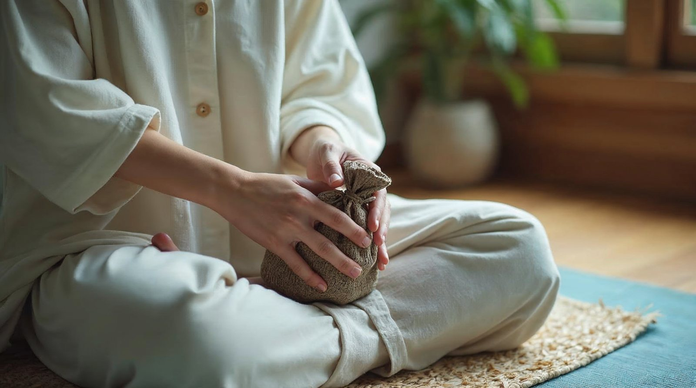
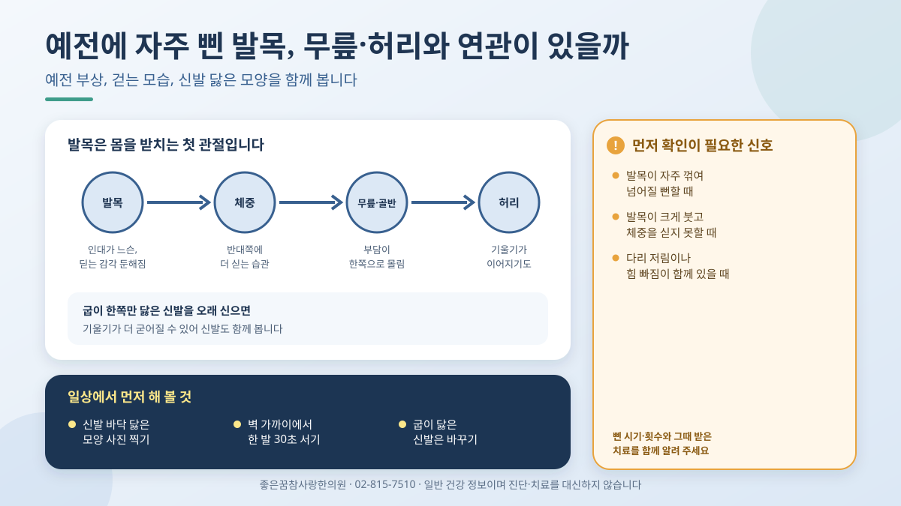

이종호 한의사 감수좋은꿈참사랑한의원 대표원장 (한의사 면허번호 19769)발행 2026-11-23 · 수정 2026-11-25
이 글의 차례
예전에 발목을 자주 삐었다면 지금의 무릎과 허리 불편과 연관이 있을 수 있어, 예전 부상 이야기와 지금 걷는 모습, 신발 닳는 모양을 함께 살핍니다. 발목은 몸을 받치는 첫 관절이라 오래된 습관이 무릎과 골반, 허리까지 이어질 수 있기 때문입니다. '발목은 원래 잘 삐어요'라고 지나가듯 말씀하시는 분들이 많은데, 이런 이야기가 중요한 단서가 됩니다.
물론 무릎과 허리 불편이 모두 발목에서 시작되는 것은 아닙니다. 오래 앉는 일, 체중 변화, 무릎과 허리 자체의 문제도 함께 따져 보아야 해서 발목 이야기는 여러 단서 가운데 하나로 놓고 봅니다. 지금 막 발목을 삐어 크게 붓고 체중을 싣기 어렵다면 이 글의 생활 조정보다 영상 검사가 가능한 곳에서 확인하는 일이 먼저입니다.
왜 이런 불편이 생길 수 있나요
- 발목을 여러 번 삐면 발목을 잡아 주는 인대가 느슨해지고, 발이 어디에 놓였는지 느끼는 감각이 둔해질 수 있습니다.
- 아팠던 발목을 아끼느라 반대쪽에 체중을 더 싣는 습관이 생기면 무릎과 골반의 부담이 한쪽으로 몰릴 수 있습니다.
- 걸을 때 발이 안쪽이나 바깥쪽으로 기울면 그 영향이 무릎과 허리로 이어지기도 합니다.
- 굽이 한쪽만 닳은 신발을 오래 신으면 이런 기울기가 더 굳어질 수 있습니다.
- 삔 뒤 발목이 위로 덜 굽혀진 채 굳으면, 계단을 내려가거나 쪼그려 앉을 때 무릎이 안쪽으로 모이거나 허리를 더 숙여 그만큼을 메우기도 합니다.
- 발목 바깥쪽을 받쳐 주는 근육이 약해지면 울퉁불퉁한 길에서 다시 삐기 쉬워, 삐고 아끼는 일이 되풀이될 수 있습니다.
먼저 이렇게 여쭙니다
- 어느 쪽 발목을 몇 번 정도 삐셨나요?
- 신발 바닥이 한쪽만 많이 닳나요?
- 무릎이나 허리 중 어디가 더 불편한가요?
- 오래 서 있거나 걸을 때 한쪽에 체중을 싣나요?
- 울퉁불퉁한 길에서 발목이 꺾일 것 같은 느낌이 드나요?
- 삐었을 때 깁스나 보조기를 했는지, 얼마나 쉬고 다시 운동을 시작했나요?

일상에서 먼저 해 볼 수 있는 것
- 신발 바닥 닳은 모양을 사진으로 찍어 오기
- 한 발로 30초 서기를 양쪽 번갈아 해 보기(벽이나 싱크대를 짚을 수 있는 곳에서, 흔들리면 바로 손 짚기)
- 굽이 닳은 신발은 바꾸고, 오래 걷는 날에는 굽이 높거나 바닥이 좁은 신발 피하기
- 계단에서는 난간을 잡고 발 전체로 바르게 딛는 데 신경 쓰기
- 서 있을 때 한쪽 다리에 기대지 말고 양발에 고르게 체중 싣기
- 운동 전에는 발목을 천천히 돌리고, 벽을 짚고 뒤꿈치를 들었다 내리기를 10번쯤 해 보기
상황별 예시
- 예를 들어 학창 시절 농구나 축구를 하며 같은 발목을 여러 번 삔 직장인이라면, 오래 서 있거나 많이 걸은 날 같은 쪽 무릎 안쪽과 허리 한쪽이 뻐근하다고 말씀하시는 경우가 있습니다. 신발 바닥 닳은 모양과 양쪽 한 발 서기 시간을 비교해 보면 이야기를 정리하는 데 도움이 됩니다.
- 예를 들어 언덕과 계단이 많은 동네를 매일 오르내리는 어르신이 예전에 삔 발목 쪽으로 자꾸 휘청하신다면, 무릎과 허리보다 넘어지지 않는 것이 먼저입니다. 굽이 닳지 않은 신발로 바꾸고 계단에서는 난간을 잡으시도록 하며, 넘어질 뻔한 날을 가족과 함께 적어 봅니다.
- 예를 들어 굽 있는 구두를 오래 신는 직장인이 출퇴근길에 발목을 자주 접질린다면, 오가는 길에는 운동화를 신고 사무실에서 갈아 신는 방법부터 함께 이야기합니다.

스스로 점검해 보세요
- 같은 쪽 발목을 여러 번 삔 적이 있다.
- 울퉁불퉁한 길이나 내리막에서 발목이 꺾일 것 같아 불안하다.
- 한 발 서기를 하면 한쪽만 유독 흔들리거나 오래 버티지 못한다.
- 신발 바닥이 한쪽만 유난히 닳는다.
- 쪼그려 앉을 때 한쪽 뒤꿈치가 뜨거나 발목이 덜 굽혀진다.
- 무릎과 골반, 허리의 불편이 늘 같은 쪽에 몰려 있다.
- 최근 발목이 꺾여 넘어질 뻔한 일이 잦아졌다.
앞의 여섯 가지는 신발과 균형 연습부터 해 볼 신호이고, 마지막 항목에 해당하면 넘어지기 전에 먼저 상담을 받아 보세요.
한의원에서 함께 살필 수 있는 경우
- 발목, 무릎, 골반, 허리의 균형을 함께 보고 걷는 모습을 살핍니다.
- 필요하다고 판단되면 추나와 침으로 상태에 맞게 이어서 살핍니다.
- 발목 인대 주변 상태 확인이 필요하면 초음파를 검토합니다.
첫 방문은 이렇게 진행됩니다
- 이야기 듣기: 발목을 삔 시기와 횟수, 그때 받은 치료, 지금 무릎과 허리가 불편한 동작과 시간대, 넘어질 뻔한 일을 먼저 충분히 듣습니다.
- 맥 짚기와 몸 살피기: 모든 분께 맥부터 짚어 잠과 피로, 다리 붓기, 손발의 온기까지 몸 전체 상태를 살핍니다.
- 서기와 걷기 확인: 서 있는 모습과 걷는 모습, 한 발 서기, 쪼그려 앉기, 신발 닳은 모양을 보고, 발목에서 무릎, 골반, 허리까지 차례로 움직여 보며 아픈 자리를 짚어 봅니다.
- 초음파로 함께 보기: 필요하다고 판단될 때 발목 바깥쪽 인대 주변을 반대쪽과 비교하며 화면으로 함께 보고 설명드립니다.
- 방향 정하기: 추나로 발목부터 골반과 허리까지의 균형을 살피고, 침, 약침, 온열을 상태에 맞게 이어서 씁니다. 추나 강도는 말씀을 들으며 조절합니다.
- 귀가 전과 다음 방문: 집에서 해 볼 균형 연습과 신발 고르는 법을 알려 드리고, 다시 오시면 지난번 한 발 서기 시간과 불편했던 계단 동작이 그사이 어땠는지 이어서 여쭙습니다.
얼마나 지켜보고 언제 상담할까요
- 오래된 발목 불안정과 함께 무릎과 허리가 뻐근한 경우는 신발을 바꾸고 한 발 서기 연습을 2~3주 이어 가며, 같은 쪽 불편이 어떻게 달라지는지 적어 봅니다.
- 2~3주가 지나도 같은 쪽 무릎과 허리 불편이 그대로이거나 걷는 모습이 달라질 만큼 불편하면 상담을 받아 보세요.
- 가볍게 다시 삔 경우는 며칠 쉬며 붓기와 통증이 줄어드는지 보고, 1~2주가 지나도 걷기가 불편하거나 붓기가 되풀이되면 확인합니다.
- 다친 뒤 몇 걸음도 체중을 싣기 어렵거나 복사뼈를 눌렀을 때 뼈가 아프면 지켜보지 말고 영상 검사가 가능한 곳에서 먼저 확인합니다.
이렇게 기록해 오시면 상담이 쉬워집니다
- 발목을 삔 시기와 횟수, 그때 받은 치료
- 자주 신는 신발(가능하면 신고 오기)
- 무릎과 허리가 불편한 동작과 시간대
- 한 발 서기가 양쪽 각각 몇 초 되는지
- 최근 넘어지거나 넘어질 뻔한 날과 장소
이런 증상은 먼저 확인이 필요합니다
- 발목이 자주 꺾여 넘어질 뻔하는 경우
- 발목이 크게 붓고 멍이 들며 체중을 싣지 못하는 경우
- 다리 저림이나 힘 빠짐이 함께 있는 경우
- 발목이 붉고 뜨거우며 열이 나는 경우
- 허리 통증과 함께 대소변 조절이 어려운 경우
다친 뒤 심하게 붓고 멍이 들거나 체중을 싣기 어렵다면 영상 검사가 가능한 의료기관을 먼저 찾으시고, 대소변 조절이 어렵거나 다리 힘이 갑자기 빠지면 지체하지 말고 가까운 응급실로 가세요. 추나요법의 건강보험 적용 여부와 횟수, 본인부담은 제도와 진찰 결과에 따라 달라질 수 있어 방문 전 전화(02-815-7510)로 확인해 주세요.
개인마다 진료 내용과 기간은 다를 수 있습니다. 복용 중인 약은 처방한 의사와 상의 없이 줄이거나 끊지 않습니다.
관련 글
- 진료실에서 서 보라고 하거나 걸어 보라고 하는 이유는 무엇인가요?
- 상도동 언덕길과 계단을 매일 오르내릴 때 무릎은 어떻게 챙기나요?
- 추나요법 건강보험 적용은 어떻게 확인하나요?

여쭙는 것
- 어느 쪽 발목을 몇 번 정도 삐셨나요?
- 신발 바닥이 한쪽만 많이 닳나요?
- 무릎이나 허리 중 어디가 더 불편한가요?
생활에서 해 볼 것
- 신발 바닥 닳은 모양을 사진으로 찍어 오기
- 한 발로 30초 서기를 양쪽 번갈아 해 보기(벽이나 싱크대를 짚을 수 있는 곳에서,…
- 굽이 닳은 신발은 바꾸고, 오래 걷는 날에는 굽이 높거나 바닥이 좁은 신발 피하기
한의원에서 함께 살필 것
- 발목, 무릎, 골반, 허리의 균형을 함께 보고 걷는 모습을 살핍니다.
- 필요하다고 판단되면 추나와 침으로 상태에 맞게 이어서 살핍니다.
- 발목 인대 주변 상태 확인이 필요하면 초음파를 검토합니다.
먼저 확인이 필요한 신호
- 발목이 자주 꺾여 넘어질 뻔하는 경우
- 발목이 크게 붓고 멍이 들며 체중을 싣지 못하는 경우
- 다리 저림이나 힘 빠짐이 함께 있는 경우
한눈에 보는 표
| 구분 | 핵심 |
|---|---|
| 여쭙는 것 | 어느 쪽 발목을 몇 번 정도 삐셨나요? 신발 바닥이 한쪽만 많이 닳나요? |
| 생활에서 해 볼 것 | 신발 바닥 닳은 모양을 사진으로 찍어 오기 한 발로 30초 서기를 양쪽 번갈아 해 보기(벽이나 싱크대를 짚을 수 있는 곳에서, 흔들리면 바로 손 짚기) |
| 한의원에서 함께 살필 것 | 발목, 무릎, 골반, 허리의 균형을 함께 보고 걷는 모습을 살핍니다. 필요하다고 판단되면 추나와 침으로 상태에 맞게 이어서 살핍니다. |
| 먼저 확인이 필요한 신호 | 발목이 자주 꺾여 넘어질 뻔하는 경우 발목이 크게 붓고 멍이 들며 체중을 싣지 못하는 경우 |
자주 묻는 질문
오래전 부상도 이야기해야 하나요?
네. 오래된 부상도 지금 걷는 모습을 이해하는 데 도움이 됩니다. 날짜가 기억나지 않아도 학창 시절, 몇 년 전처럼 대략의 시기와 횟수만 알려 주셔도 충분합니다.
깔창을 바꾸면 도움이 되나요?
발 모양과 걷는 모습을 본 뒤 함께 이야기해 보세요. 깔창 하나에 기대기보다 닳은 신발을 바꾸고 균형 연습을 함께 하는 경우가 많습니다.
발목 보호대를 하고 다니면 되나요?
운동할 때 잠시 쓰는 것은 괜찮지만, 보호대만으로는 발목 감각이 돌아오지 않아 균형 연습을 함께 권합니다.
진료 시간은 어떻게 되나요?
좋은꿈참사랑한의원은 평일 09:30~20:00(점심 13:00~14:00), 토·일·공휴일 09:30~15:00에 진료합니다.
좋은꿈참사랑한의원은 재진 때 지난번 이야기부터 이어서 여쭙니다. 진료시간과 예약은 오시는 길에서 확인하세요.
어디서 상담받을 수 있나요?
좋은꿈참사랑한의원은 서울 동작구 만양로2길 2 신성빌딩 3층·5층(서울 동작구 상도동, 7호선 상도역 3번 출구 근처)에 있습니다. 한의사 3명(이종호 대표원장, 조영기 수석진료원장, 정원영 진료원장)이 진료합니다. 진료시간은 평일 09:30~20:00(점심 13:00~14:00), 토·일·공휴일 09:30~15:00이며, 방문 전 전화로 확인을 권합니다. 예약은 네이버 예약, 카카오톡 상담, 전화 02-815-7510로 받습니다.
이 글은 일반적인 건강 정보이며 개인의 진단이나 치료를 대신하지 않습니다. 증상이 있거나 복용 중인 약이 있다면 진료를 통해 확인하세요. 치료 효과는 개인마다 다를 수 있습니다.
작성 기준: 일반적으로 알려져 있는 건강 정보를 참고해 정리했습니다(대표원장 감수). 증상 기록은 1~2주 동안 하루 1회, 비슷한 시간에 적어 오시면 지난 상태와 비교하기 쉽습니다.